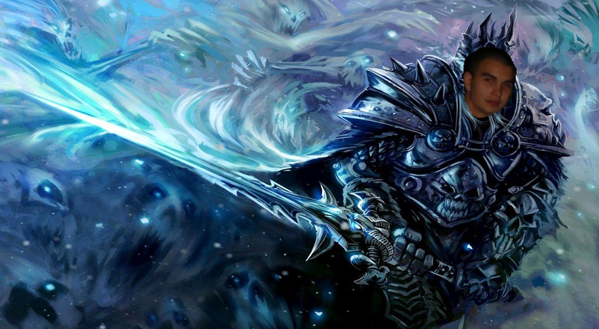

Introduksjon
Så jeg heter da Øivind Miguel Frydenlund.
Jeg er 34 år gammel, og bor akkurat nå i
Trøgstad, Viken (Østfold)
På fritiden liker jeg:
- Spille bl.a. World of Warcraft og Dota,
gjerne med de jeg har blitt kjent med
gjennom spillet over årene
- Gå småturer, gjerne nær eller i skogen
- Se filmer/serier og intervju/debatt-videoer
Her er da et lite bilde av meg, in action!

Om det er K R I S E, trykk på denne knappen